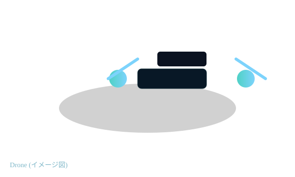
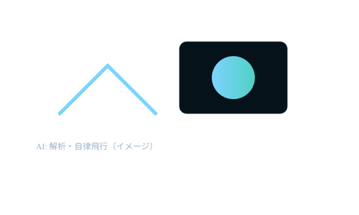

災害報道
洪水・土砂災害などの被害を短時間で把握し、避難・救援判断を支援します。記者の安全性も向上します。
このサイトでは、ドローンジャーナリズムが社会や生活環境をどう変えるか、そしてAI社会がもたらす影響をわかりやすく整理します。
無人航空機（ドローン）をニュース取材や報道目的で用いることを指します。空中からの撮影、広域被害の把握、危険地帯の取材などを低コストで行えます。
2010年代から各国で研究と実践が進み、大学やメディア、NGOが取り組みを進めてきました。
洪水・土砂災害などの被害を短時間で把握し、避難・救援判断を支援します。記者の安全性も向上します。
群衆の動きや衝突状況を上空から可視化し、公平な視点を提供する可能性があります（運用リスクあり）。
不法伐採や違法投棄の監視、センサー搭載による空間データの記録で長期調査を支援します。

情報アクセスの拡大、コスト・安全性の改善、公共の監視強化など、市民の知る権利や民主的議論を後押しします。
"技術は強力なツールだが、運用の透明性と倫理が同時に求められる" — 編集部ガイドライン（例）
機体開発、カメラ・センサー、通信やUTM、法制度、編集部の新たな役割と市民との対話が不可欠です。

映像解析・自律飛行・ルート最適化などで効率と安全性を高める一方、ディープフェイク等のリスクも存在します。
ドローンとAIは報道と生活環境を変える力を持つが、倫理、法規、住民合意といった課題解決が求められる。